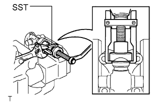

PROPELLER SHAFT ASSEMBLY > REASSEMBLY |
| 1. INSTALL REAR PROPELLER SHAFT UNIVERSAL JOINT SPIDER BEARING |
Apply MP grease to the universal joint spider and new bearings.
Install the universal joint spider to the propeller shaft.
|  |
Using SST, install 2 of the bearings to the universal joint spider.
Using SST, adjust both bearings so that the snap ring grooves are at maximum and equal width.
 |
Install 4 new snap rings of equal thickness which will allow no axial play.
| Part No. | Mark | Thickness |
| 90520-25039 | 1 | 2.28 to 2.30 mm (0.0897 to 0.0905 in.) |
| 90520-25040 | 2 | 2.30 to 2.32 mm (0.0905 to 0.0913 in.) |
| 90520-25041 | - | 2.32 to 2.34 mm (0.0913 to 0.0921 in.) |
| 90520-25042 | Brown | 2.34 to 2.36 mm (0.0921 to 0.0929 in.) |
| 90520-25043 | Blue | 2.36 to 2.38 mm (0.0929 to 0.0937 in.) |
| 90520-25044 | 6 | 2.38 to 2.40 mm (0.0937 to 0.0944 in.) |
| 90520-25045 | 7 | 2.40 to 2.42 mm (0.0944 to 0.0952 in.) |
| 90520-25046 | 8 | 2.42 to 2.44 mm (0.0952 to 0.0960 in.) |
| 90520-25047 |  | 2.44 to 2.46 mm (0.0960 to 0.0968 in.) |
| 90520-25048 | 10 | 2.46 to 2.48 mm (0.0968 to 0.0976 in.) |
| 90520-25049 | A | 2.48 to 2.50 mm (0.0976 to 0.0984 in.) |
| 90520-25050 | B | 2.50 to 2.52 mm (0.0984 to 0.0992 in.) |
| 90520-25051 | C | 2.52 to 2.54 mm (0.0992 to 0.0999 in.) |
| 90520-25052 | D | 2.54 to 2.56 mm (0.0999 to 0.1007 in.) |
| 90520-25053 | E | 2.56 to 2.58 mm (0.1007 to 0.1015 in.) |
| 90520-25054 | J | 2.18 to 2.20 mm (0.0858 to 0.0866 in.) |
| 90520-25055 | K | 2.20 to 2.22 mm (0.0866 to 0.0874 in.) |
| 90520-25056 | F | 2.22 to 2.24 mm (0.0874 to 0.0881 in.) |
| 90520-25057 | G | 2.24 to 2.26 mm (0.0881 to 0.0889 in.) |
| 90520-25058 | H | 2.26 to 2.28 mm (0.0889 to 0.0897 in.) |
Using a hammer, tap the yoke until there is no clearance between the spider bearing outer race and snap ring.
| 2. INSPECT PROPELLER SHAFT ASSEMBLY |
| *a | Spider grease fitting assembly direction for propeller shaft assembly | *b | Rear Side |
| 3. INSPECT REAR PROPELLER SHAFT UNIVERSAL JOINT SPIDER BEARING |
Check the spider bearings for wear or damage.
If necessary, replace the spider bearing.
 |
Check the spider bearing axial play by turning the yoke with holding the shaft tightly.